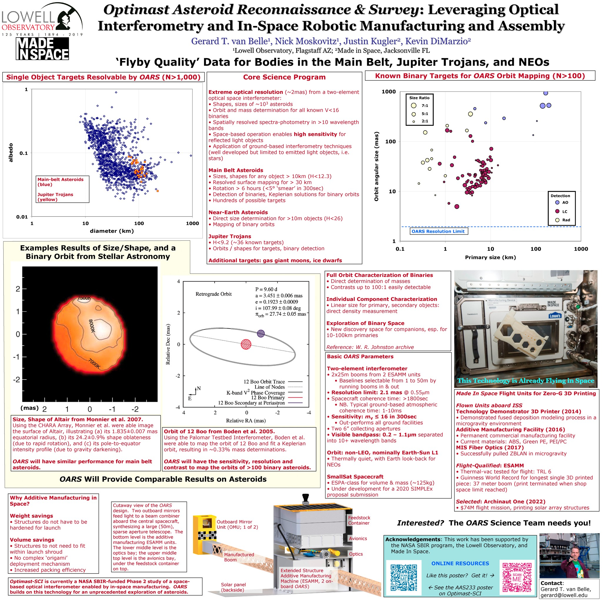

Optimast Asteroid Reconnaissance & Survey:
Leveraging Optical
Interferometry and
In-Space Robotic Manufacturing and Assembly
Gerard van Belle1; Nick Moskovitz1, Justin Kugler2, Kevin DiMarzio2
1Lowell Observatory, Flagstaff AZ; 2Made in Space, Jacksonville FL
Binary Asteroids 5
Fort Collins, Colorado
September 3-5, 2019

Full-size JPG
PDF
Links of interest
Lead author: Gerard van Belle
Institutions:
AAS233 poster on Optimast-SCI